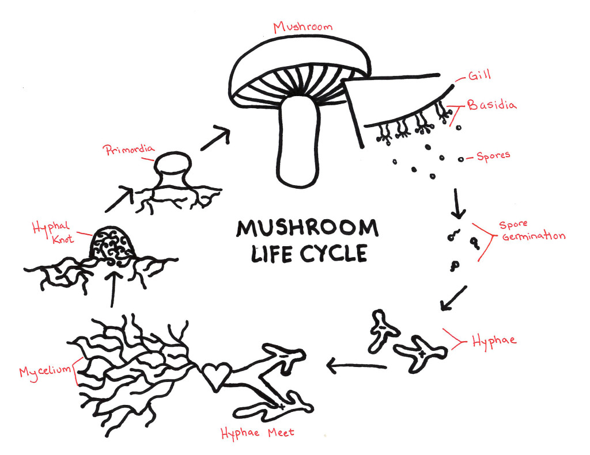
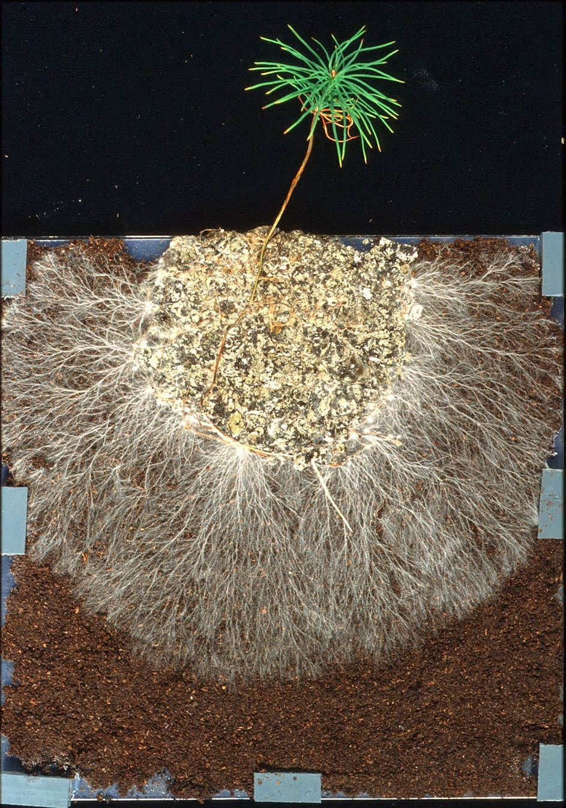
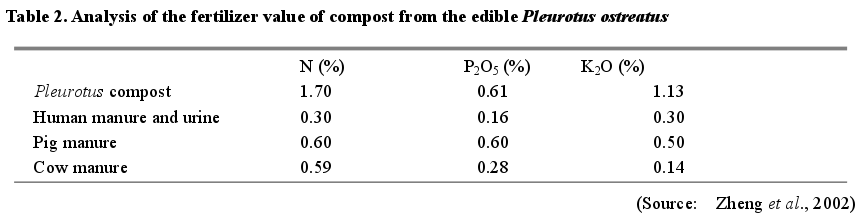
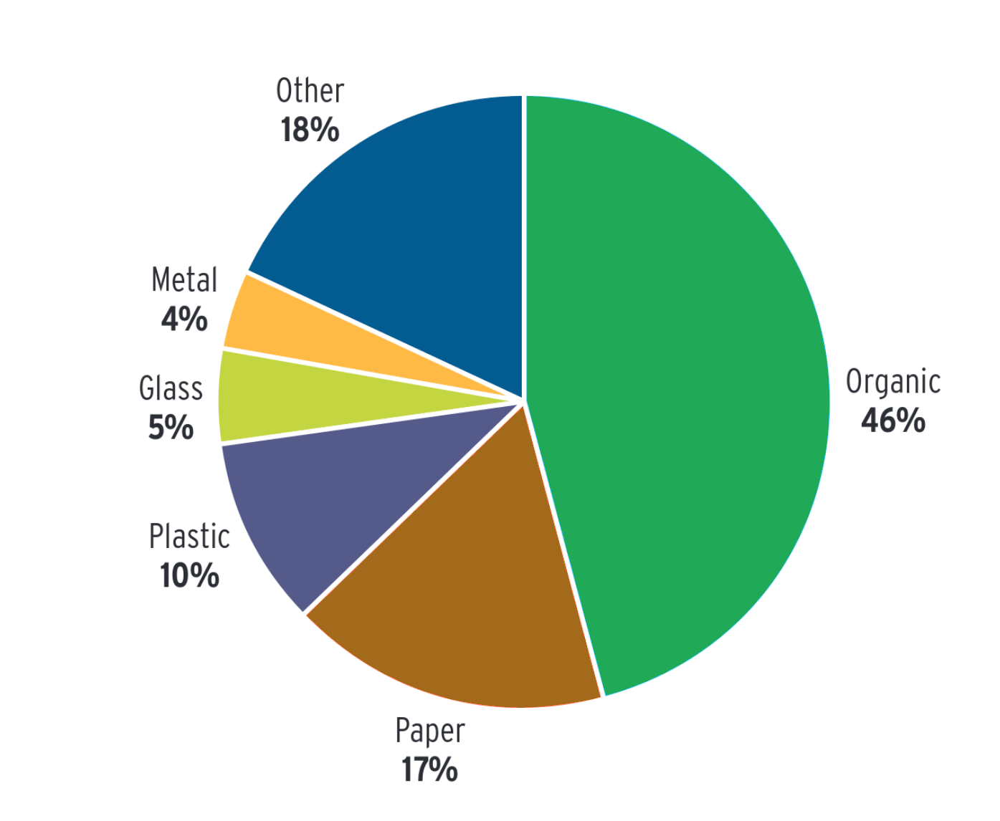
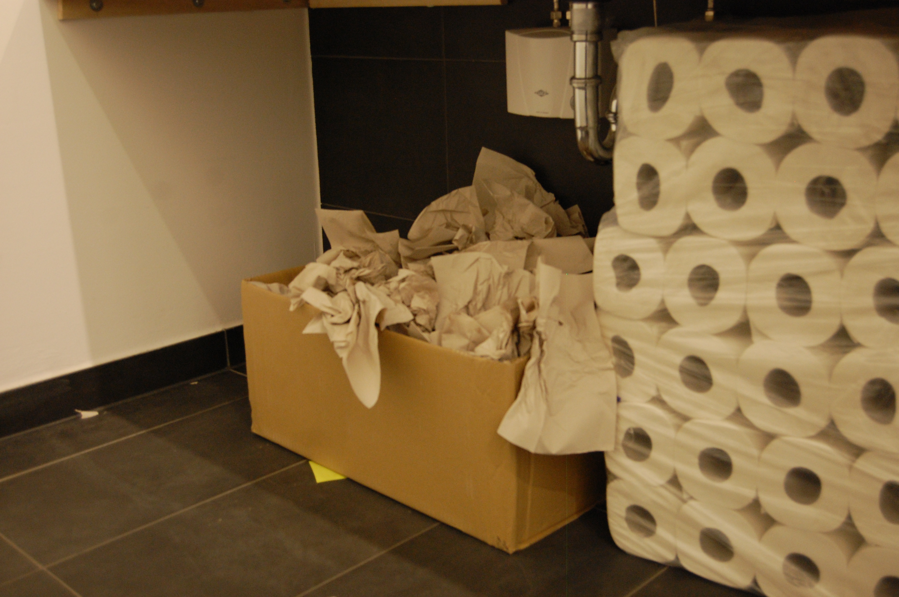
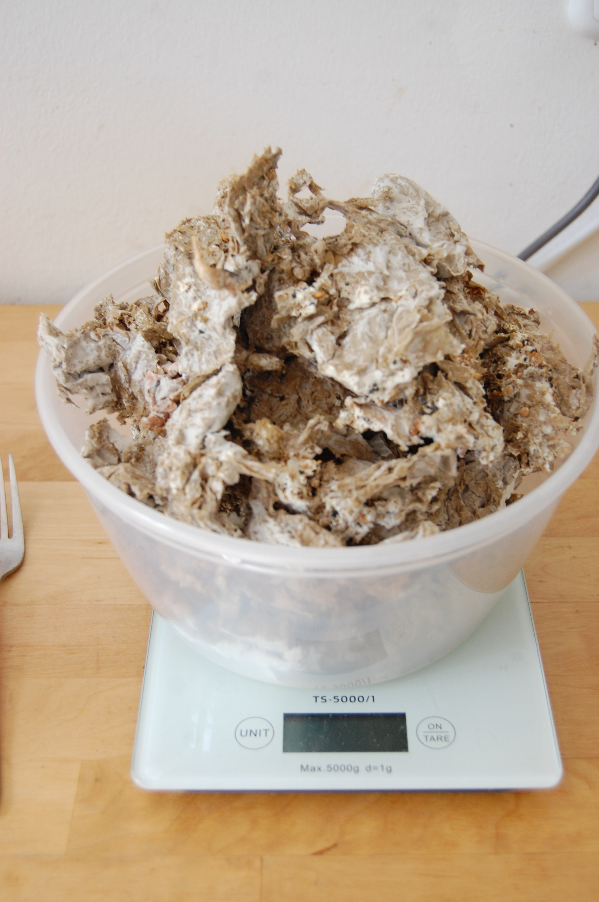
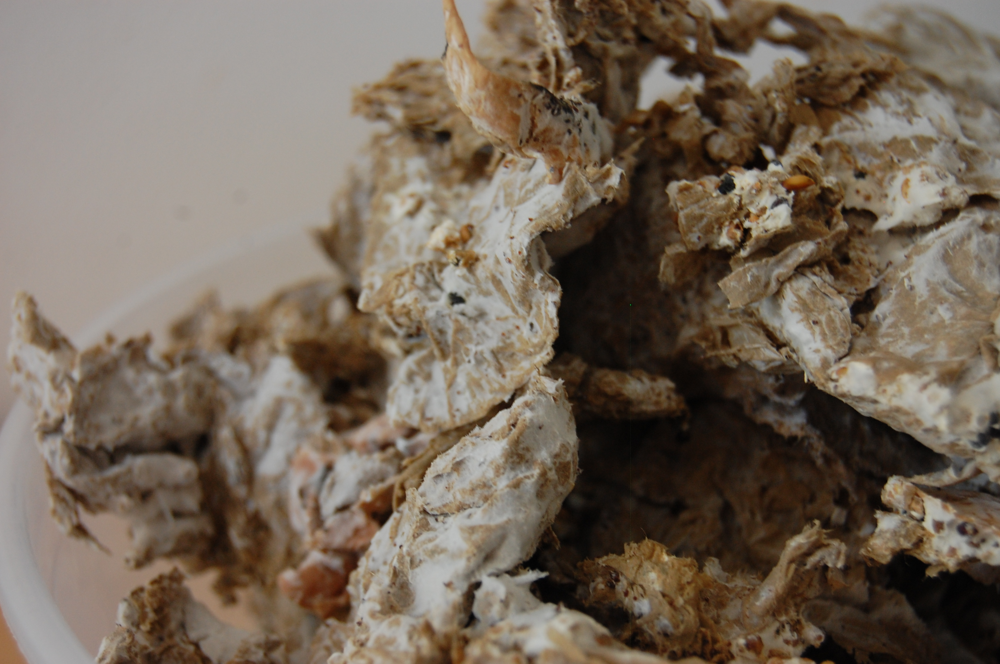

What will we cover?
- Integral vs Linear Systems
- A basic overview of Mycology
- What is 'Integral Mycology'?
- Growing mushrooms on paper waste
- Questions
- No workshop ㅠㅠ
- Discussion and brainstorming session :D
Linear vs Integral Systems
By definition
-
Linear: 'progressing from one stage to another in a single series of steps; sequential.'
-
Integral: 'necessary to make a whole complete; essential or fundamental.'
Contrasting properties of Linear vs Integral Systems
Linear Systems
-
Energy flows along straight lines
-
Parts are specialized modular components
-
High entropy/low information
-
Closed system/no loops
-
High rate of material loss
-
Single channels - doesn't handle overflow
-
High Waste
-
Imbalance passed along - tends towards instability
-
Uniform, simple and easy to grasp
Integral Systems
-
Energy flows through loops
-
Parts fit overlapping functions
-
Low entropy/high information
-
Open system/closed loops
-
High rate of material recovery
-
Multiple alternate channels - overflow is deeply ingrained
-
Little waste
-
Self-regulating - tends towards stability
-
Diverse, complex and difficult to grasp
A (very short) introduction to Mycology

From yellowelanor.com/mushroom-life-cycle
Ecological Role of Decomposers
-
New elements cannot be created, they must be recycled
- Fungi break down lignin and cellulose
-
Fungi are the only thing that break down lignin and cellulose
- No, seriously. Think about that
Ecological Role of Decomposers II
-
Unlock nutrients that would otherwise remain inaccessible
-
Create edge environments which support countless plants, insects
and animals
-
Fungi are the alchemists of the natural world - they do no less
than tease eternal life from dead matter
Example Decomposers
-
Shiitake (Lentinula edodes)
-
Oyster (Pleurotus spp)
-
Reishi (Ganoderma lucidium)
-
Button/Portobello (Agaricus bisporus)
-
'Magic' Mushroom (Psilocybe spp)
Ecological Role of Mycorrhizal Fungi
-
Expand the absorptive area of plants' roots 10-1000x
- Growth rate ++
- Resistence to drought ++
- Nutritional content ++
- Medicinal quality ++
- Flowering rate ++
- Time to reach maturity --
-
Act as an external immune system for connected plant systems
-
Unlock nutrients that would otherwise remain inaccessible

From botany-lab.blogspot.com/2015/04
Example Mycorrhizal Fungi
-
Chanterelles (Cantharellus spp)
-
Truffles (Tuber spp)
-
Fly Agaric (Amanita Muscaria)
Integral Mycology
"Mushrooms help us reconnect to nature in profound ways."
Paul Stamets, Mycelium Running
Multiple Functions at Each Phase
Spores
-
Sporlated chain oil for the logging industry
-
Insulation (Eben Bayer)
Mycelium: Mycorestoration
-
Myco-remediation
- Oil spills (Pleurotus spp)
- Munitions (Flammulina velutipes)
-
Nerve gas/chemical weapons (Psilocybe spp)
-
Myco-filtration
- Stormwater
- Greywater
- Agricultural runoff
-
Myco-forestry
- Increase native Fungi
- Support decomposition
- Promote fungal interaction
Mycelium: Companion Planting
- General benefits
- Specific fungi/plant relationships
- Elm Oyster + Brassica spp
- Pholiota nameko + Chokeberry
Mycelium: Medicine
-
Mushrooms produce many potent medicinal compounds
-
Adaptogens - compounds which enhance up your mental and emotional immune systems
- Psilocybe spp for cluster headaches
- 'Custom myco-medicine'
Mycelium: Materials
- Building materials & insulation
- Leather and textile substitutes
- Packaging
- Artistic medium
Spent Substrate
- 'Species sequencing'
- Biocoal/Fuel
- Animal feed
- Fertilizer
Fertilizer Values for Oyster Substrate

Direct Recycling and Personal Use

From What A Waste, 2012
Growing Mushrooms on Paper Waste
or 'How I Learned to See Waste as a Resource in Disguise'

Process
-
Pasteurize the paper and achieve correct moisture levels
- Combine spawn with prepared paper
-
Allow time for the mycelium to colonize the paper
-
Fruit, dry, or use colonized paper as spawn (as in step #2)
Pasteurization: Trial and Error
- Steam
- Difficult to 'get it right'
- Uses a substantial amount of energy
- Submerging
- Nearly impossible to 'get it right'
- Creates a glutinous, clumpy mess
- AND patches of completely dry paper
- So how to 'get it right'?
-
The magic ratio - 1.34 parts water(mL) to paper(g)
-
Heat a small amount of water once - low energy use
- Even moisture content
Revised Pasteurization Process
-
Measure the paper - for example, 1500g of paper waste
-
Boil 1.34 times the paper's weight in mL: 1500 * 1.34 = 2010mL
-
Put the paper in a heat-resistant container with a lid and pour
the boiling water over it
-
Put on the lid and shake the container around so there are no dry
spots
-
Insulate with a blanket or similar and leave it until it's cool to
the touch (2-4 hours, but overnight is fine)
Colonized Paper Waste

Colonized Paper Waste (detail)

Summary
-
When you see waste as a resource, you see the whole world differently
- But...can you eat them?
-
In the meantime, paper for art and coffee for food
Resources
- The Integral Urban House - Farallones Institute
- Mycelium Running - Paul Stamets
- Radical Mycology - Peter McCoy
- The Permaculture City - Toby Hemenway
- A Pattern Language - Alexander, Ishikawa, Silverstein